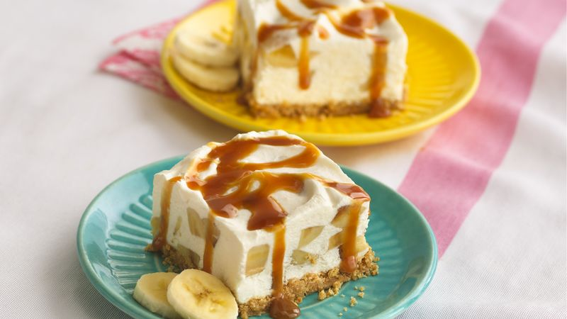

Banana Dessert

Description
Learn how to make a exquisite banana and yoghurt frozen dessert, perfect for your between-meals snack!
Ingredients
- Bananas: 2
- Natural or vanilla flavored yoghurt: 1 single serve cup
- Graham cracker crumbs or any cookie you like: needed amount
- Nutella o dulce de leche: 2 tea spoons
- Coconut, nuts, caramel or whatever topic you like!
Steps
- Cover a pan with nonstick foil and fill the bottom of it with your ground cookies.
- Spread half of the yoghurt over the crust.
- Peel and cut your bananas in halves or into slices and place them above the yoghurt.
nanas
- Spread the spoons of nutella on top of the bananas and then spread the left yoghurt.
- Add your favorite toppings.
- Freeze it until it is firm, but remove from freezer 10 minutes before serving.
- Enjoy!